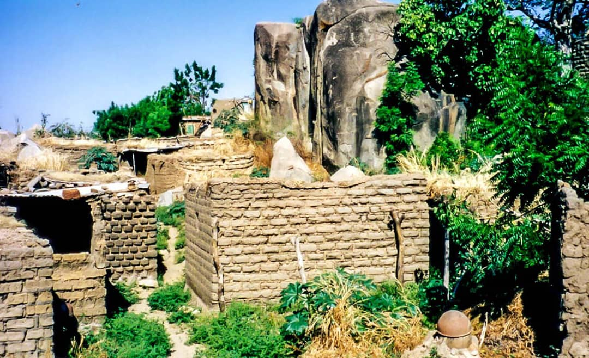

Village de Koro
Description et Historique: Le village de Koro est situé à 15 km de Bobo-Dioulasso, toutes ses maisons sont en banco et on le sépare en deux parties. La population de KORO, composée de Bobo, Dioula, Peulh est chiffrée à environ 30.000 habitants.Cette bourgade atypique de 30 000 âmes est bâtie à 200 m d’altitude, sur du rock. Au XI siècle quand les premiers habitants font le choix de ce lieu atypique pour vivre, ils trouvaient là un refuge contre les envahisseurs. Plusieurs siècles après, Koro résistent au temps et garde son originalité. De nos jours, c’est un village dont la structure, l’histoire et la végétation attirent les touristes.